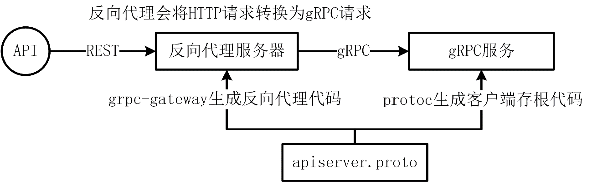

实现一个 HTTP 反向代理服务器
在企业应用开发中，如果需要对外提供接口，最好的方式是提供 HTTP 接口。为了避免重新实现一套 HTTP 服务代码，建议使用 grpc-gateway 包，将 HTTP 请求转化为 gRPC 请求，以完全复用 gRPC 接口的请求处理逻辑。
grpc-gateway 介绍
grpc-gateway 是 protoc 的一个插件。它读取 gRPC 服务定义，并生成反向代理服务器（Reverse Proxy）。反向代理服务器根据 gRPC 服务定义中的 google.api.http 注释生成，能够将 RESTful JSON API 转换为 gRPC 请求，从而实现同时支持 gRPC 客户端和 HTTP 客户端调用 gRPC 服务的功能。图 7-5 展示了通过 gRPC 请求和 REST 请求调用 gRPC 服务的流程。

在传统的 gRPC 应用程序中，通常会创建一个 gRPC 客户端与 gRPC 服务进行交互。但在此场景中，并未直接构建 gRPC 客户端，而是利用 grpc-gateway 构建了一个反向代理服务。该代理服务为 gRPC 服务中的每个远程方法暴露了 RESTful API，并接收来自 REST 客户端的 HTTP 请求。随后，它将 HTTP 请求转换为 gRPC 消息，并调用后端服务的远程方法。后端服务返回的响应消息会被代理服务再次转换为 HTTP 响应，并发送回客户端。
为什么需要 gRPC-Gateway
在 Go 项目开发中，为了提升接口性能并便于内部系统之间的接口调用，通常会使用 RPC 协议通信。而对于外部系统，为了提供更标准、更通用且易于理解的接口调用方式，往往会使用与编程语言无关的 HTTP 协议进行通信。这两种不同的协议在代码实现上存在较大差异。如果开发者希望同时实现内部系统使用 RPC 协议通信以及外部系统通过 HTTP 协议访问，则需要维护两套服务及接口实现代码。这将显著增加后期代码维护与升级的成本，同时也容易导致错误。如果能够将 HTTP 请求转换为 gRPC 请求，并统一通过 gRPC 接口实现所有功能，那么上述问题即可迎刃而解。gRPC-Gateway 正是通过类似的实现方式解决了这一问题。
如何使用 grpc-gateway
grpc-gateway 是 protoc 工具的一个插件，所以首先需要确保系统已经安装了 protoc 工具。此外，使用 gprc-gateway 还需要安装以下两个插件：
- protoc-gen-grpc-gateway：为 gRPC 服务生成 HTTP/REST API 反向代理代码，从而实现对 gRPC 服务的 HTTP 映射支持；
- protoc-gen-openapiv2：用于从 Protobuf 描述中生成 OpenAPI v2（Swagger）定义文件。
插件安装命令如下：
$ go install github.com/grpc-ecosystem/grpc-gateway/v2/protoc-gen-grpc-gateway@v2.24.0
$ go install github.com/grpc-ecosystem/grpc-gateway/v2/protoc-gen-openapiv2@v2.24.0
上一节课，已经实现了一个简单的 gRPC 服务，现在只需要在 MiniBlog 服务定义文件中添加 gRPC-Gateway 注解即可，注解定义了 gRPC 服务如何映射到 RESTful JSON API，包括指定 HTTP 请求方法、请求路径、请求参数等信息。MiniBlog gRPC 服务 UpdatePost 接口的注解如代码清单 7-6 所示。
// MiniBlog 定义了一个 MiniBlog RPC 服务
service MiniBlog {
// UpdatePost 更新文章
rpc UpdatePost(UpdatePostRequest) returns (UpdatePostResponse) {
// 将 UpdatePost 映射为 HTTP PUT 请求，并通过 URL /v1/posts/{postID} 访问
// {postID} 是一个路径参数，grpc-gateway 会根据 postID 名称，将其解析并映射到
// UpdatePostRequest 类型中相应的字段.
// body: "*" 表示请求体中的所有字段都会映射到 UpdatePostRequest 类型。
option (google.api.http) = {
put: "/v1/posts/{postID}",
body: "*",
};
// 提供用于生成 OpenAPI 文档的注解
option (grpc.gateway.protoc_gen_openapiv2.options.openapiv2_operation) = {
// 在文档中简要描述此操作的功能：更新文章。
summary: "更新文章";
// 为此操作指定唯一标识符（UpdatePost），便于跟踪
operation_id: "UpdatePost";
// 将此操作归类到 "博客管理" 标签组，方便在 OpenAPI 文档中组织接口分组
tags: "博客管理";
};
}
}
// UpdatePostRequest 表示更新文章请求
message UpdatePostRequest {
// postID 表示要更新的文章 ID，对应 {postID}
string postID = 1;
// title 表示更新后的博客标题
optional string title = 2;
// content 表示更新后的博客内容
optional string content = 3;
}
// UpdatePostResponse 表示更新文章响应
message UpdatePostResponse {
}
在 UpdatePost 接口定义中，使用 google.api.http 注解，将 UpdatePost 映射为 HTTP PUT 请求，并通过 URL /v1/posts/{postID} 访问。{postID} 是一个路径参数，grpc-gateway 会根据 postID 名称，将其解析并映射到 UpdatePostRequest 类型中的 postID 字段。body: "*" 表示请求体中的所有字段都会映射到 UpdatePostRequest 类型中的同名字段中。
在通过 google.api.http 注解将 gRPC 方法映射为 HTTP 请求时，有以下规则需要遵守：
- HTTP 路径可以包含一个或多个 gRPC 请求消息中的字段，但这些字段应该是 nonrepeated 的原始类型字段；
- 如果没有 HTTP 请求体，那么出现在请求消息中但没有出现在 HTTP 路径中的字段，将自动成为 HTTP 查询参数；
- 映射为 URL 查询参数的字段应该是原始类型、repeated 原始类型或 nonrepeated 消息类型；
- 对于查询参数的 repeated 字段，参数可以在 URL 中重复，形式为 …?param=A&m=B；
- 对于查询参数中的消息类型，消息的每个字段都会映射为单独的参数，比如 …?foo.a=A&foo.b=B&foo.c=C。
此外，还可以根据需要添加全局的 OpenAPI 配置，用于在生成 OpenAPI 文档时，提供更详细的配置信息。
miniblog 实现反向代理服务器
miniblog 实现反向代理服务器的步骤如下：
- 给 gRPC 服务添加 HTTP 映射规则；
- 生成反向代理代码；
- 实现反向代理服务器；
- HTTP 请求测试。
给 gRPC 服务添加 HTTP 映射规则
修改 pkg/api/apiserver/v1/apiserver.proto 文件，添加以下 google.api.http 注解：
// MiniBlog 定义了一个 MiniBlog RPC 服务
service MiniBlog {
// Healthz 健康检查
rpc Healthz(google.protobuf.Empty) returns (HealthzResponse) {
// 通过 google.api.http 注释，指定 HTTP 方法为 GET、URL路径为 /healthz
option (google.api.http) = {
get: "/healthz",
};
option (grpc.gateway.protoc_gen_openapiv2.options.openapiv2_operation) = {
// 在 OpenAPI 文档中的接口简要描述，为“服务健康检查”
summary: "服务健康检查";
// 标识该操作的唯一ID，为“Healthz”
operation_id: "Healthz";
// 将该接口归类为“服务治理”
tags: "服务治理";
};
}
}
上述代码，通过 google.api.http 注释，指定 HTTP 方法为 GET、URL 路径为 /healthz。在 apiserver.proto 文件中还添加了 OpenAPI 全局配置，用来在生成 OpenAPI 文档时展示更加详细的 API 信息。OpenAPI 全局配置见 feature/s10 分支下的 pkg/api/apiserver/v1/apiserver.proto 文件。
生成反向代理代码
修改 Makefile 文件的 protoc 规则新增以下编译插件：
protoc: # 编译 protobuf 文件.
@echo "===========> Generate protobuf files"
@protoc \
…
--grpc-gateway_out=allow_delete_body=true,paths=source_relative:$(APIROOT) \
--openapiv2_out=$(PROJ_ROOT_DIR)/api/openapi \
--openapiv2_opt=allow_delete_body=true,logtostderr=true \
$(shell find $(APIROOT) -name *.proto)
在 RESTful API 中，DELETE 方法通常用于“删除资源”，按 REST 规范应只携带资源标识符（如路径或查询参数），不建议附带请求体。然而，在某些场景下需要通过 DELETE 请求体传递额外信息（如删除选项或多个待删除的资源列表）。此时，可设置 allow_delete_body=true，放宽对 DELETE 请求的限制，允许携带请求体，例如以下 gRPC 接口定义：
// DeletePost 删除文章
rpc DeletePost(DeletePostRequest) returns (DeletePostResponse) {
option (google.api.http) = {
delete: "/v1/posts",
body: "*",
};
option (grpc.gateway.protoc_gen_openapiv2.options.openapiv2_operation) = {
summary: "删除文章";
operation_id: "DeletePost";
tags: "博客管理";
};
}
上述 HTTP 参数映射支持以下 HTTP 接口调用：
$ curl -XDELETE -H"Content-Type: application/json" -d'{"postIDs":["post-w6irkg","post-w6irkb"]}' http://127.0.0.1:5555/v1/posts
更新完 Makefile 的 protoc 规则之后，可以执行以下命令生成反向代理服务器代码：
$ make protoc
上述命令会生成 pkg/api/apiserver/v1/apiserver.pb.gw.go 文件，apiserver.pb.gw.go 就包含了反向代理服务器相关的代码，该文件中包含了 RegisterMiniBlogHandler 核心函数，其作用是将 gRPC 服务的方法注册为 HTTP REST 接口，实现 HTTP 和 gRPC 请求的转换和代理。
实现反向代理服务器
给 internal/apiserver/server.go 的 Config 结构体添加 HTTPOptions 字段
// Config 配置结构体，用于存储应用相关的配置.
// 不用 viper.Get，是因为这种方式能更加清晰的知道应用提供了哪些配置项.
type Config struct {
ServerMode string
JWTKey string
Expiration time.Duration
GRPCOptions *genericoptions.GRPCOptions
HTTPOptions *genericoptions.HTTPOptions
}
在 cmd/mb-apiserver/app/options/options.go 对应添加 HTTPOptions 配置
// ServerOptions 包含服务器配置选项.
type ServerOptions struct {
...
// HTTPOptions 包含 http 配置选项.
HTTPOptions *genericoptions.HTTPOptions `json:"http" mapstructure:"http"`
}
// NewServerOptions 创建带有默认值的 ServerOptions 实例.
func NewServerOptions() *ServerOptions {
opts := &ServerOptions{
...
HTTPOptions: genericoptions.NewHTTPOptions(),
}
opts.GRPCOptions.Addr = ":6666"
opts.HTTPOptions.Addr = ":5555"
return opts
}
// AddFlags 将 ServerOptions 的选项绑定到命令行标志.
// 通过使用 pflag 包，可以实现从命令行中解析这些选项的功能.
func (o *ServerOptions) AddFlags(fs *pflag.FlagSet) {
...
o.HTTPOptions.AddFlags(fs)
}
// Config 基于 ServerOptions 创建新的 apiserver.Config。
func (o *ServerOptions) Config() (*apiserver.Config, error) {
return &apiserver.Config{
...
HTTPOptions: o.HTTPOptions,
}, nil
}
在生成了反向代理服务器代码之后，便可以在 internal/apiserver/server.go 文件中，添加代码实现反向代理服务器。新增代码如代码清单 7-6 所示。
package apiserver
import (
...
"github.com/grpc-ecosystem/grpc-gateway/v2/runtime"
"google.golang.org/grpc/credentials/insecure"
...
"google.golang.org/protobuf/encoding/protojson"
...
)
// Run 运行应用.
func (s *UnionServer) Run() error {
// 打印一条日志，用来提示 GRPC 服务已经起来，方便排障
log.Infow("Start to listening the incoming requests on grpc address", "addr", s.cfg.GRPCOptions.Addr)
// nolint: errcheck
go s.srv.Serve(s.lis)
//nolint: staticcheck
dialOptions := []grpc.DialOption{grpc.WithBlock(), grpc.WithTransportCredentials(insecure.NewCredentials())}
conn, err := grpc.NewClient(s.cfg.GRPCOptions.Addr, dialOptions...)
if err != nil {
return err
}
gwmux := runtime.NewServeMux(runtime.WithMarshalerOption(runtime.MIMEWildcard, &runtime.JSONPb{
MarshalOptions: protojson.MarshalOptions{
// 设置序列化 protobuf 数据时，枚举类型的字段以数字格式输出.
// 否则，默认会以字符串格式输出，跟枚举类型定义不一致，带来理解成本.
UseEnumNumbers: true,
},
}))
if err := apiv1.RegisterMiniBlogHandler(context.Background(), gwmux, conn); err != nil {
return err
}
log.Infow("Start to listening the incoming requests", "protocol", "http", "addr", s.cfg.HTTPOptions.Addr)
httpsrv := &http.Server{
Addr: s.cfg.HTTPOptions.Addr,
Handler: gwmux,
}
if err := httpsrv.ListenAndServe(); err != nil && !errors.Is(err, http.ErrServerClosed) {
return err
}
return nil
}
在代码清单 7-6 中，通过 go s.srv.Serve(s.lis) 在协程中启动 gRPC 服务。通过 grpc.NewClient 创建 gRPC 客户端连接 conn。insecure.NewCredentials() 是 gRPC 提供的一个函数，用于创建不安全的传输凭据（TransportCredentials）。使用这种凭据时，gRPC 客户端和服务端之间的通信不会加密，也不会进行任何身份验证。因为 HTTP 请求转发到 gRPC 客户端，是内部转发行为，所以这里不用进行通信加密和身份验证。之后，通过以下代码行将 gRPC 服务的方法注册为 HTTP REST 接口，并将 HTTP 请求转换为 gRPC 接口请求，发送到 gRPC 客户端连接 conn 中：
bv1.RegisterMiniBlogHandler(context.Background(), gwmux, conn)
这里要注意，在创建 gwmux 实例时，通过设置 UseEnumNumbers: true 来设置序列化 protobuf 数据时，枚举类型的字段以数字格式输出。否则，默认会以字符串格式输出，跟枚举类型定义不一致，带来理解成本。例如，如果不加 UseEnumNumbers: true 设置，请求/healthz 接口时返回如下：
{"status":"Healthy","timestamp":"2025-02-01 00:50:12","message":""}
但其实 HealthzResponse 消息定义中，status 字段是数字型的，这会带来一些理解成本。
代码清单 7-6，最后创建了一个 HTTP 服务实例 httpsrv，并调用 httpsrv.ListenAndServe() 启动 HTTP 服务。
代码清单 7-6 中，核心代码有两处。第一处是在 Go 协程中启动 gRPC 服务器，这个要先于 HTTP 服务器启动，否则 HTTP 服务器无法转发请求到 gRPC 服务器。
第二处是 apiv1.RegisterMiniBlogHandler() 方法调用，该方法会注册 HTTP 路由，并将 HTTP 请求转换为 gRPC 请求，发送到 gRPC 客户端 conn 中。
至此，成功实现了一个反向代理服务器，完整代码见 feature/s10 分支。
HTTP 请求测试
修改 $HOME/.miniblog/mb-apiserver.yaml 文件，添加 HTTP 服务器配置：
# HTTP 服务器相关配置
http:
# HTTP 服务器监听地址
addr: :5555
执行以下命令，编译代码、发送 HTTP 请求测试：
$ make build
$ _output/mb-apiserver
打开一个新的 Linux 终端，运行以下命令请求 /healthz 接口：
$ curl http://127.0.0.1:5555/healthz # 执行 HTTP 请求
{"timestamp":"2025-06-20 00:52:19"}
$ go run examples/client/health/main.go # 执行 gRPC 请求
{"timestamp":"2025-06-20 00:52:28"}
可以看到 HTTP 请求和 gRPC 请求均成功执行。